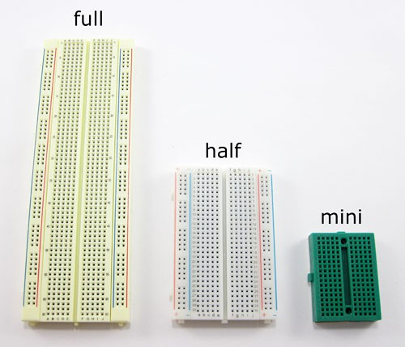
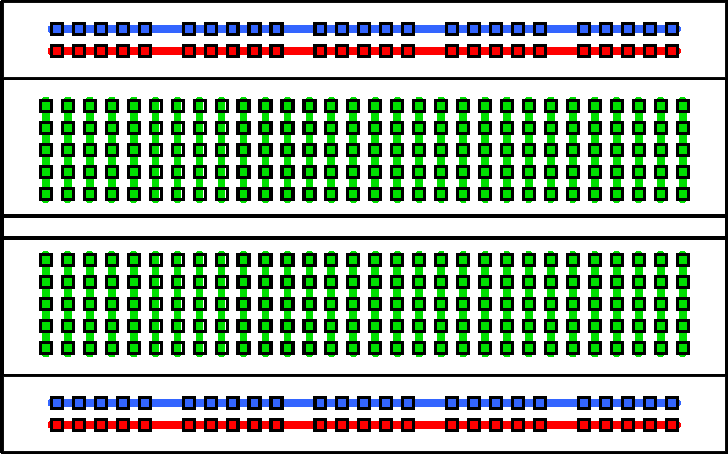
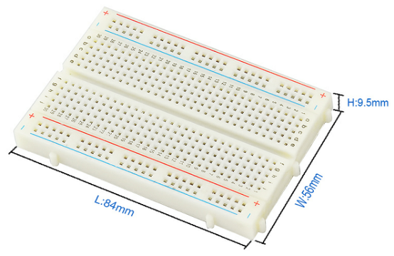

A breadboard, solderless breadboard, protoboard, or terminal array board is a construction base used to build semi-permanent prototypes of electronic circuits. Wikipedia ↗
Where to buy
Breadboards can come in different sizes. Circuitful uses the half-size breadboard.


